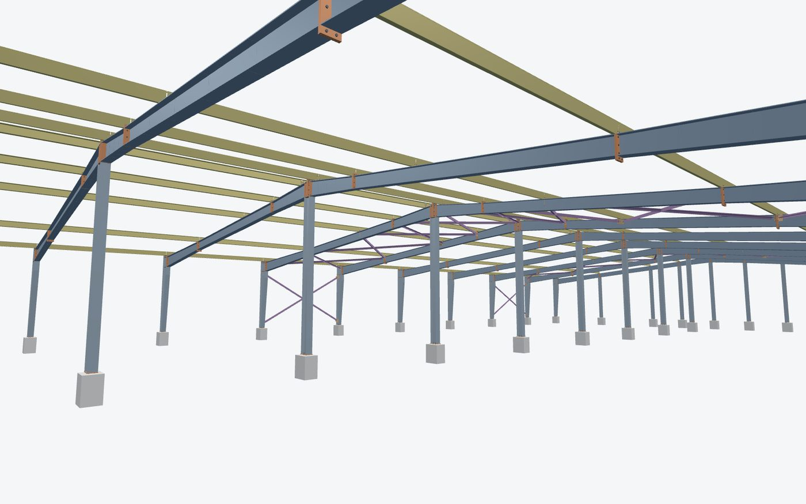
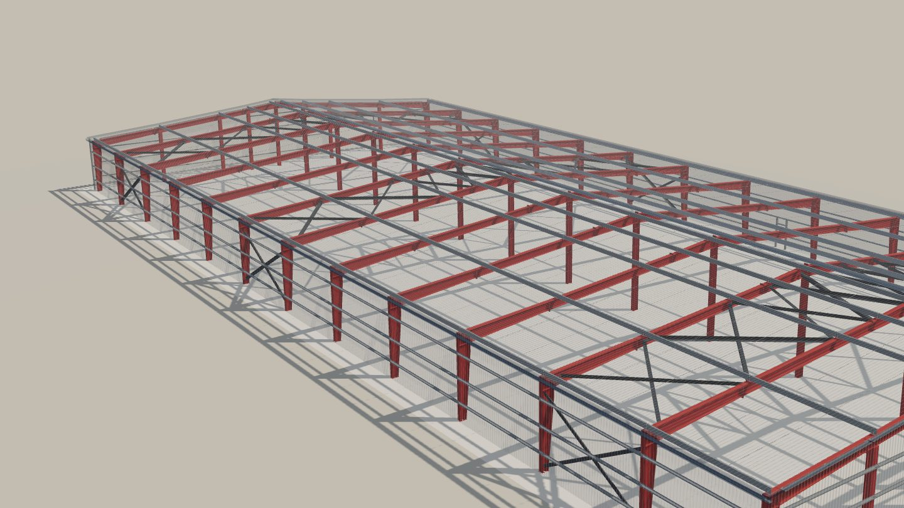
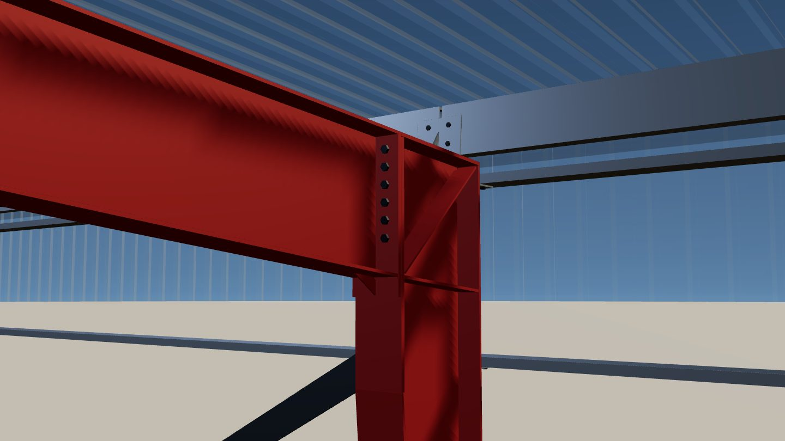
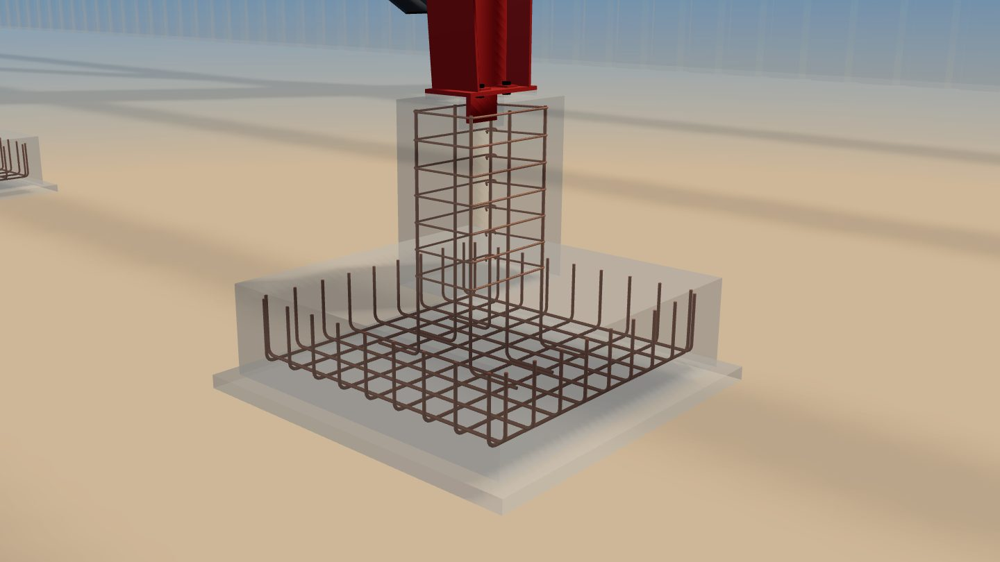
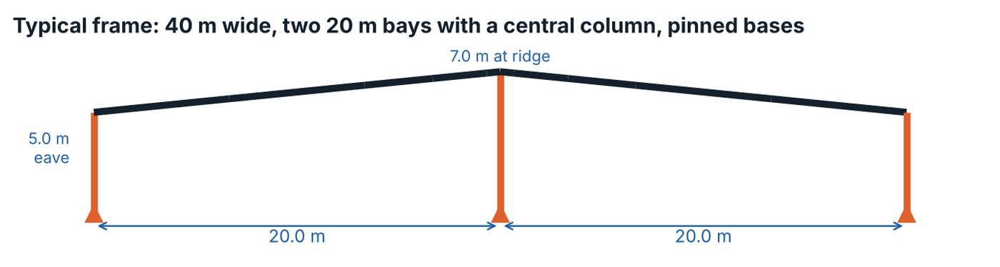

The challenge
The building needed a 40 m wide covered floor, about 91 m long, with a low eave of 5 m. A wide, low building attracts high wind uplift on the roof, and every frame is repeated twelve times, so any extra steel in one frame is multiplied across the whole building.
Our approach
- Set out a two-span frame (2 × 20 m) with a central column, so the rafters stay shallow and light instead of spanning the full 40 m.
- Used tapered I-sections for rafters and columns: deep (up to 750 mm) where bending is highest at the eaves and the ridge, shallow where it is not.
- Applied wind loads to ASCE 7-16 (basic wind speed 47 m/s, exposure C) and seismic loads to ASCE 7-16 by the equivalent lateral force method, then checked 34 strength and 5 serviceability load combinations.
- Placed roof and wall bracing in the end and middle bays to carry wind along the length of the building into the foundations.
- Checked all 361 members to AISC 360-16 (LRFD) using the direct analysis method with P-delta. Every member passes; the highest ratio is 0.48 on the rafters and 0.42 on the side columns, so the frame sizes are set by stiffness rather than strength.
- Designed every connection type for the worst forces across all its locations and all 34 strength load combinations, then modelled each one in place.
From analysis lines to a real steel model
An analysis model puts every member on its centreline, so members overlap at the joints and no plate or bolt can be placed correctly. We rebuilt the structure as a fabrication-ready model:
- Columns placed with their outer flange on the gridline and the rafters cut back to the column face, so the end plates sit flat on the column flange.
- Rafters broken into transportable pieces at the section changes (6.67 m and 16.67 m from each eave), joined by bolted end-plate splices.
- Purlins rotated to the 1:10 roof slope and seated on welded cleats; bracing angles bolted to gusset plates at both ends.
- Base plates, anchor bolts, shear keys and concrete pedestals at all 51 columns.
The finished model holds 51 columns, 198 rafter pieces and purlins, 60 bracing members, 656 plates and 1,634 bolts.

Cladding, gates and foundations
We then took the model to fabrication level of detail (LOD 400) for the whole building, not only the frames:
- C-section purlins on bolted cleats with sag rods, and C-section wall girts on welded clips with bolted ends.
- 0.5 mm galvanised trapezoidal sheeting on the roof and walls, with ridge cap, rake and corner trims and eave gutters.
- A 5 m roller-shutter gate in each gable, framed with jambs and a header girt, and a personnel door in the side wall.
- 51 isolated pad footings with pedestals, sized from the support reactions, with the footing mesh and pedestal cages modelled bar by bar.
- A clash check of the full steel model with no clashes.





Connections
We designed each connection to AISC 360-16 (LRFD) and then checked every one in a detailed finite element model: the plates, welds, bolts and anchors are modelled as they will be built and loaded with the worst forces from all 34 strength load combinations. Bolts and welds are checked to AISC 360-16, plates against a 5% plastic strain limit, and anchor rods, concrete and shear lugs to ACI 318-19.
The finite element checks led to four changes in the steel model:
- The shear lugs at the side columns now run across the frame, so they bear against the concrete in the direction of the 84 kN frame shear.
- The splice end plates stand 10 mm proud of the flush flange, so the sloped flange is fully cut and welded to the plate.
- The purlin cleats on the two gable frames have 4 bolts instead of 2. Two columns of bolts let the joint resist rotation on its own.
- The pedestal ties continue down through the footing to just above the bottom mesh, holding the starter bars in place.
Select a connection to open it in 3D. Drag to rotate, scroll or pinch to zoom.
Connection schedule
| Connection | Governing forces (LRFD) | Detail | Ratio |
|---|---|---|---|
| Eave knee | M 410 kNm | End plate 25 mm at the column face, 12 × M24 A325, panel stiffeners | 0.80 |
| Ridge and column cap | M 529 kNm, N 276 kN | Extended end plates 32 mm, 10 × M30 A325; caps 25 mm, 2 × M24 each side | 0.68 |
| Rafter splice, 6.07 m | M 126 kNm | Extended end plates 25 mm, 8 × M24 A325 | 0.36 |
| Rafter splice, 16.07 m | M 70 kNm | Extended end plates 20 mm, 8 × M24 A325 | 0.24 |
| Side column base | H 84 kN, N 144 kN, uplift 19 kN | Plate 20 mm, 4 × 25 mm F1554 Gr 36, shear lug 200 × 150 × 30 across the frame | 0.75 |
| Central column base | N 284 kN, no uplift | Plate 500 × 300 × 20, 4 × 25 mm F1554 Gr 36 | 0.10 |
| Gable column base | H 18 kN, uplift 4 kN | Plate 300 × 500 × 20, 4 × 19 mm F1554 Gr 36, shear on the rods | 0.65 |
| Gable column top | H 16 kN | 2 × M20 A325 | 0.15 |
| Purlin to rafter, interior | 31 kN down, 19 kN up per end | Cleat 10 mm with stiffener, 2 × M16 A325 each end | 0.41 |
| Purlin to rafter, gable end | 30 kN, strut 15 kN | Cleat 10 mm with stiffener, 4 × M16 A325 | 0.39 |
| Ridge purlins | Bolt force 36 kN | 4 × M20 A325 each end | 0.41 |
| Roof and wall bracing | N 18 kN | 10 mm gusset, 2 × M20 A325 | 0.10 |
Analysis



Results
- Steel weight of about 142 t, or about 39 kg per m² of floor.
- All members pass with reserve (rafters 0.48, side columns 0.42, central columns 0.16). Under service loads the rafters deflect about 31 mm (span/640) and the eaves sway less than 2 mm.
- Every connection passes the finite element check; the highest ratios are 0.80 for the eave knee bolts and 0.75 for the side-column shear lug weld.
- A complete 3D steel model ready for shop drawings, plus support reactions for the foundation design.
- The model carries the full envelope and reinforced foundations, with no clashes in the steel.
Deliverables
- Structural analysis and design report
- Member schedule with tapered section sizes
- Connection design calculations and schedule
- Full 3D model (LOD 400): steel, cladding, gates and doors
- Foundation sizes and reinforcement
- Support reactions for the foundation design